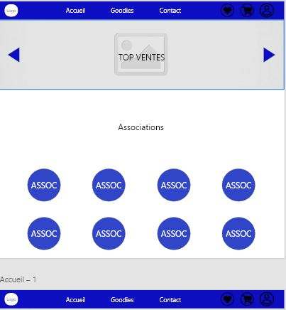
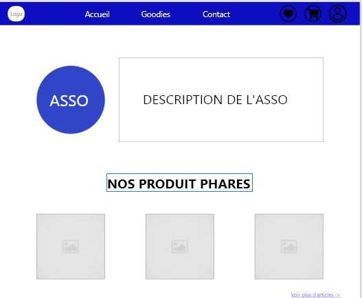
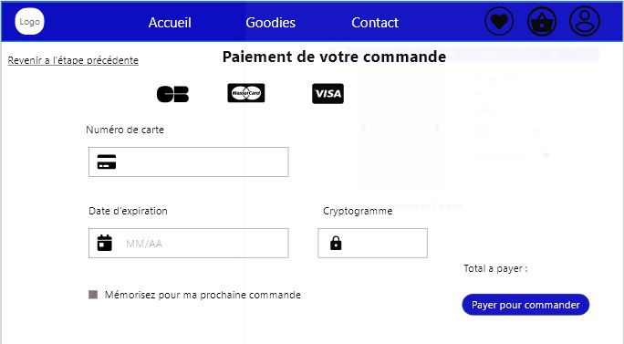
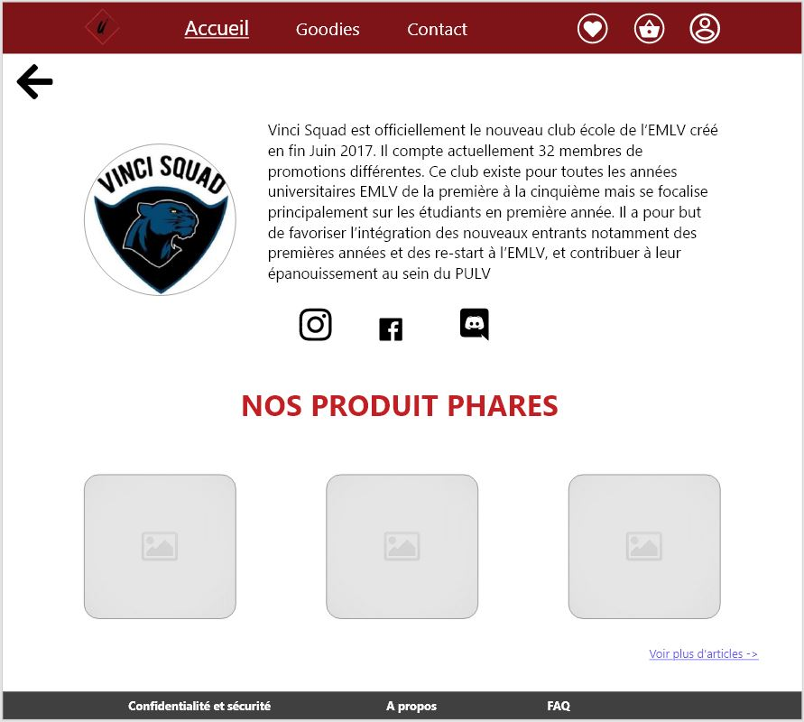
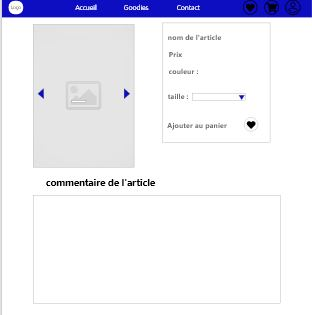
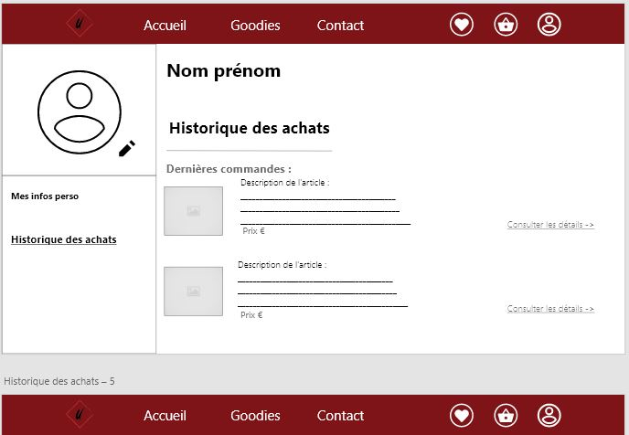
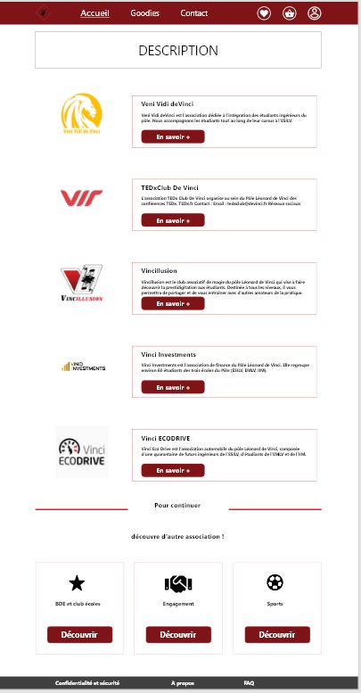
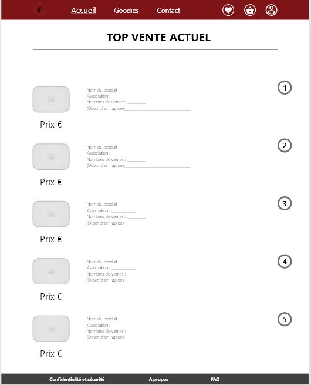
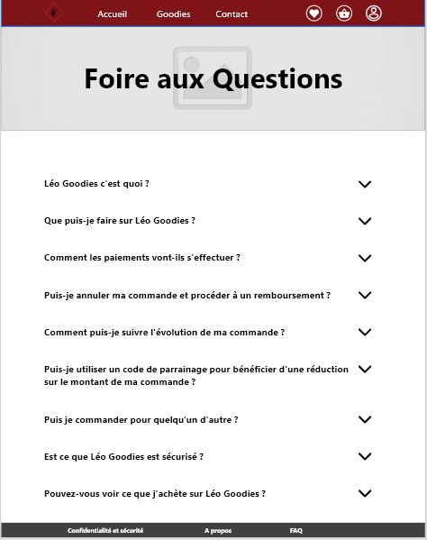

Lors de mon année préparatoire pour passer en axe développement web j'ai du réaliser un site sur un personnage de mon choix , étant fan du personnage j'ai choisi Edward Kenway de la licence Assassin's Creed . J'ai du réaliser le site en 5 pages imposées : Accueil / Histoire / Images / Blog / Contact .
Mon site contient un menu burger , un dark mode , une galerie d'images mansory , une page de connexion , un formulaire de contact ... On peut se connecter soit en tant qu'utilisateur pour par exemple poster un article de blog ou un commentaire , on peut se connecter en tant qu'administrateur pour bannier des membres , supprimer des commentaires ou des articles de blog ou encore pour contacter les utilisateurs .
Chaque page est composé de plusieurs animations en css ou js : une animation pour le menu burger mais aussi pour les images placés autour du container , un bouton pour retourner en haut de la page et une animation pour modifier la taille des images dans la galerie mansory
Le site "Pour l'amour des goodies"









Lors de ma première année dans l'axe développement web nous devons présenter un site DevLab sur la vente de goodies dans le pôle Léonard de Vinci . Notre équipe est constitué de 5 membres Louis Nourry, Cedric Jamme , William Mouchon, Louis CHU , Alexis Bally .
Pour l'instant nous travaillons sur les maquettes du site ici présentes et sur l'UI , grâce aux wireframes on peut avoir un avis sur ce à quoi va ressembler le site dans sa version finale , on pourra s'informer sur les associations du pôle et sur leurs goodies , regarder les top ventes , mettre des articles en favoris ou encore directement dans le panier pour pouvoir les commander ect ...
Le site sera codé a l'aide de Wordpress ou Shopify , on pourra effectuer des achats de tout type de goodies des associations du pôle Léonard de Vinci , laisser des commentaires ou un avis sur chaque article du site , mais aussi on pourra se créer un compte pour se connecter dans son espace personnel afin de pouvoir consulter ses infos persos ou encore son historique d'achats et ses dernières commandes .